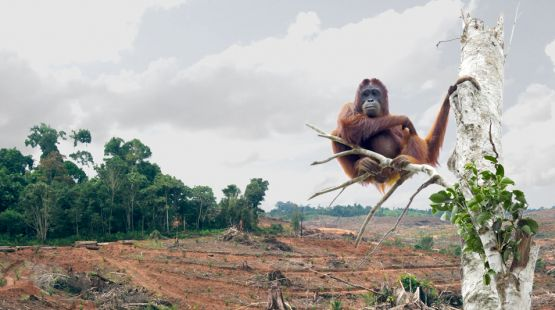
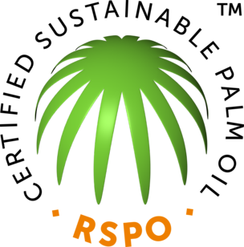

April 18, 2016
Sustainable Palm Oil

Palm oil is found in 50% of packaged products in your grocery store. But do you know where it came from? Chances are it was farmed on land that a few years ago was one of the world’s most valuable forests. These tropical forests of Southeast Asia are home to endangered orangutans, tigers, rhinos and elephants and their destruction is a major contributor to climate change as felled and burned trees and vegetation release greenhouse gases into the atmosphere.

Your most powerful tool is to be an informed consumer of sustainable palm oil. Many companies, like Nestle and L’Oreal are doing the right thing. Look for the Roundtable for Sustainable Palm Oil certified logo. More info here.